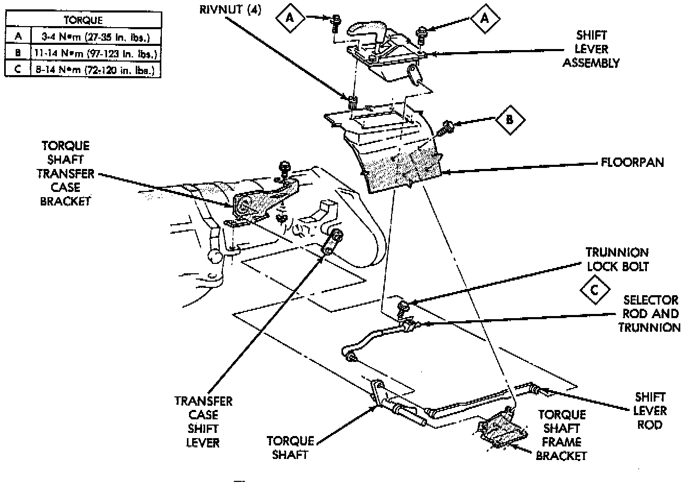

With NV249 Transfer Case

1. Shift transfer case into Neutral position.
2. Raise vehicle on hoist that will allow all four wheels to rotate freely.
3. Loosen trunnion lock bolt. Loosen bolt enough so selector rod slides freely in trunnion.
4. Verify that shift lever on transfer case is in Neutral position.
5. Tighten trunnion lock bolt to 11 - 20 Nm (96 - 180 inch lbs.) torque.
6. Lower vehicle enough for entry into driver seat but keep all wheels off shop floor.
7. Verify correct linkage adjustment. Start engine, shift transmission into gear and shift transfer case into all ranges. Be sure transfer case is fully engaged in high and low range. Readjust linkage if necessary.
8. Shut engine off and lower vehicle completely.